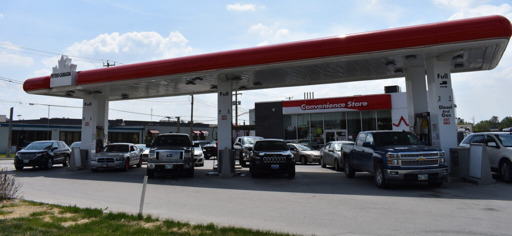
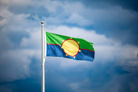

Modern Treaty One

The Living Legacy: Treaty One Today
Kapyong Barracks
Today, the government provides reserves for indigenous people just like they promised. There are self-governed education programs and Indigenous peoples history is being taught around schools. The Kapyong Barracks is a former military base located in Winnipeg, Manitoba. It has a rich history and has been redeveloped into Naawi-Oodena. The goal is to create an urban reserve that will help reshape Winnipeg's future urban growth, make a safe place to share culture and create economic opportunities for the indigenous communities.
This project has been going on since 2018 and is expected to be completed by 2028. It is guided by the Gaawijijigemangit Agreement (Working Together in Partnership), signed with the City of Winnipeg in 2022 to provide municipal services
Long Plain First Nations Gas Station
The Long Plain First Nations Gas Station Petro-Canada Keesh (formerly Arrowhead Gas Bar) is a modern example of Indigenous economic development. Located on the Long Plain First Nation reserve, this gas station provides essential services to the community and generates revenue that supports local initiatives. The project reflects the ongoing efforts of Indigenous peoples to reclaim their economic sovereignty and create sustainable opportunities for their communities.

located at the intersection of Highway 305 and Yellowquill Trail.
Fun Facts
Around 5 million dollars has been funded by the government for the development of Naawi-Oodena
The modern Treaty One flag design has 7 points which represents the 7 First Nations.
Treaty One was made an official government in 2018.
The Treaty One Nation is committed to advancing the rights and interests of its member First Nations through self-determination and self-governance.
